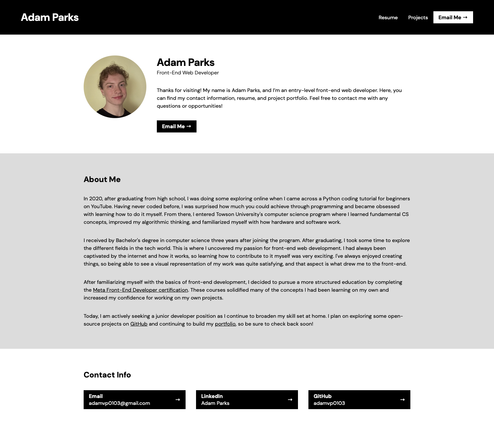
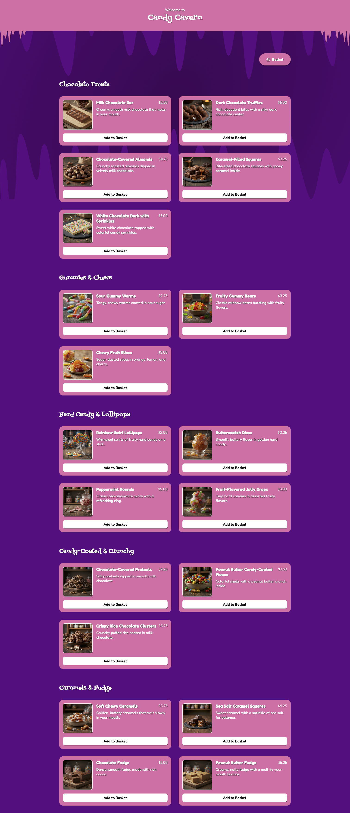
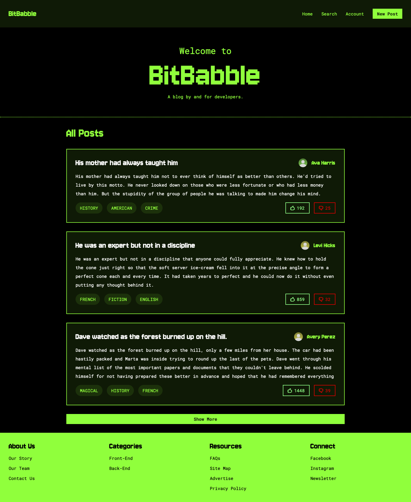

- Vanilla Architecture
- Open Graph Protocol
- JS DOM Utilization
- Expandable Navigation (Mobile)
- Email Links
- Wrapping Flex Layouts
- Media Queries
- Dark Theme

- Flex Layouts
- Grid Layouts
- Dynamic Lists
- Card Components
- React Context
- React Router Navigation
- Controlled Forms
- Client-Side Validation
- Modal Dialogs
- Responsive Layouts

- API Data Fetching
- Data Filtering
- Liking & Disliking
- Extendable Lists
- Event Propagation Adjustment
- URL Parameters
- Multiple Context Interaction
- Searching
- Profile Editing
- Posting